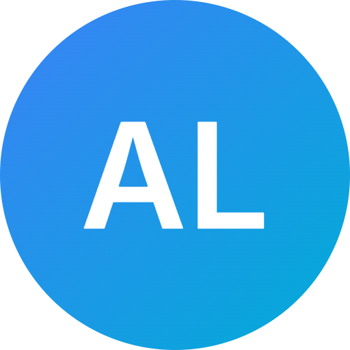
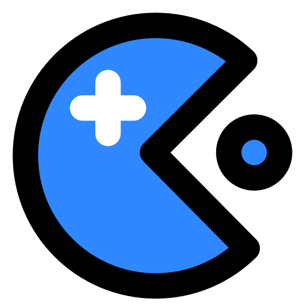
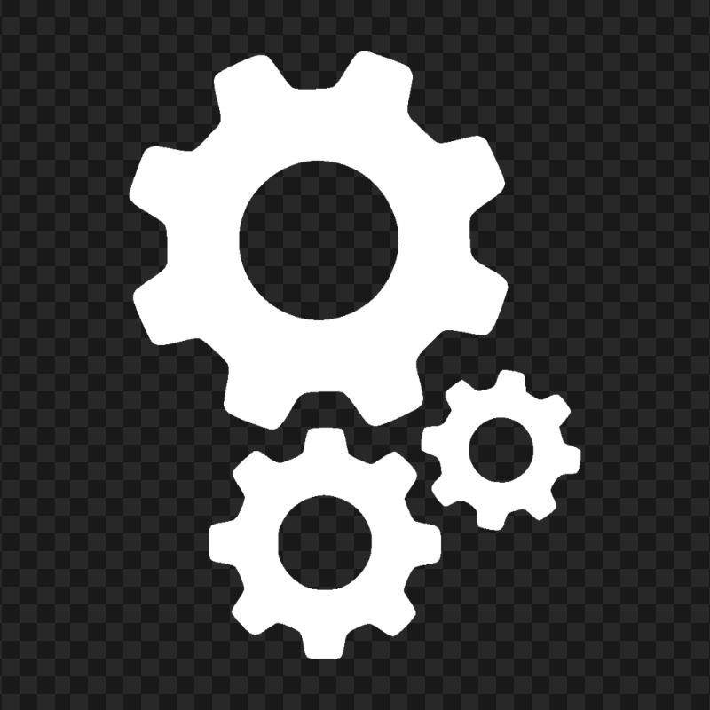

Hello World!
Kijk gerust verder op deze site om meer over mij te ontdekken en mijn: skills, interesses en projecten die ik heb gemaakt

Arseni Leonski
- Student software development en toekomstig Software engineer/Game Developer!

Mijn Projecten
Op de pagina "Projecten" kunt u kijken naar wat ik allemaal heb gemaakt en wat ik hiervan heb geleerd.

Mijn Skills
Kijk op de "About me" en de "Projecten" pagina om te ontdekken wat ik allemaal kan en hoe ik dit in mijn opleiding heb toegepast.
Contact
Bent u geinteresseert in mij of mijn werk? op de pagina "Contact" kunt u mij contacteren voor projecten of werk ik hoor graag van u!